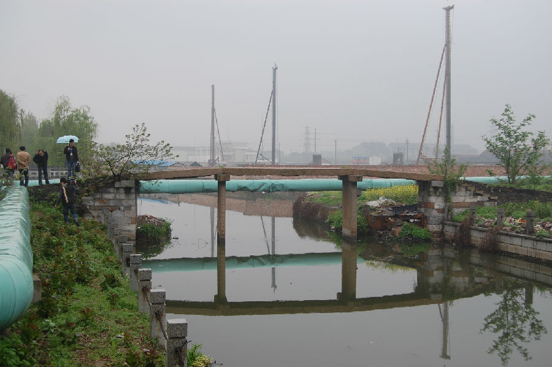

嘉兴市文物保护网 · 市级文物保护点 · 2020-11-09 · 原文

东马桥位于嘉兴市南湖区新嘉街道西马桥社区旁，东西横跨马桥港，为三孔无栏梁式石板，全长约21.3米，桥面由3块石板并列组成宽1.63米，桥底距水面高度2.82米，中孔跨度为5.6米，东西落坡石阶被水泥铺平。南北桥额刻“东马桥”和“光绪二十四年”，有桥联，北为“寒往暑来□□远处如走马，利人济物善缘积累江修桥”；南为“禾郡向南行丰稔必征动里得，□桥□北□富□都是俭中来”。东马桥是当地重要的历史建筑，虽保存一般，但全面反映了传统石板桥的风貌，具有较高的历史和科学价值。2010年公布为嘉兴市文物保护点。